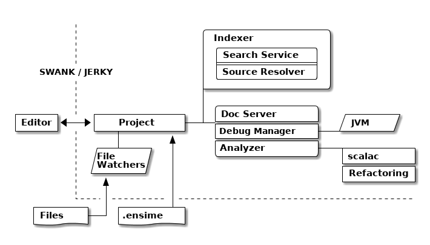
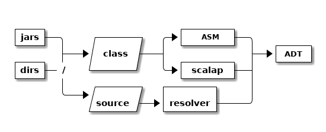
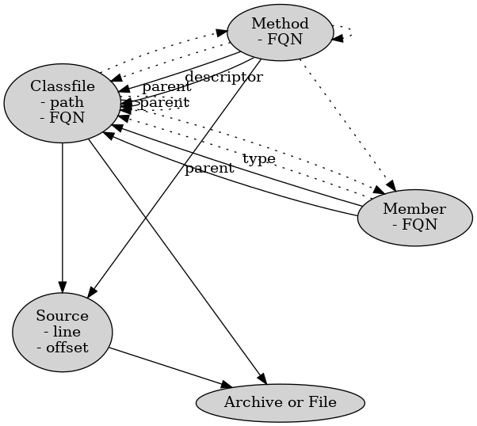

Sam Halliday
Scala Sphere 2017
@fommilnetlib-java (underpinning Spark ML)I am really an applied mathematician by training, this software thing is really just a hobby that pays the bills.
Before the crash, I did industrial research in digital signal processing, multi-high-dimensional optimisation, quantum mechanics, machine learning and a bunch of other stuff that I could just talk about forever.
I’m really into Free or Libre education and software. When I was a student in Cape Town I was one of the founders of an initiative that eventually became Siyavula and has printed 5 million Free textbooks to students in South Africa.
I’m a fellow of the Free Software Foundation. I believe they do really great things and I’d encourage you to join up even if you don’t believe in the GPL. They are doing some great lobbying for all of us against legislation that seeks to undermine our right to use or write Free software, which includes the Apache 2.0 and BSD licenses.
My most used free software project is netlib-java, which I spoke about at last year’s Scala eXchange. It’s included in the Spark Machine Learning library.
But my favourite project is ENSIME, which is an alternative development environment to Eclipse and IntelliJ for Scala and now Java.

This is an architectural overview of the internals of the ensime-server, which is bounded here by the dotted lines.
The text editor communicates with the server via SWANK, a bidirectional TCP/IP sockets protocol using S-Expressions as the language, or JERKY which is JSON over WebSockets.
The server runs locally, so it also has direct access to the files on the disc and can watch for changes without needing to be told about them. This is typically used for detecting changes in the compiled files rather than looking for changes in source code.
And when the server is started, it needs to be given a .ensime file which defines the project layout. This is typically generated by the build tool.
Inside the server, everything goes via the central Project class which effectively just delegates to the relevant sub-component. The two big parts are the Search Service and the Analyzer:

import org.objectweb.asm._
import org.objectweb.asm.Opcodes._
val receiver = new ClassVisitor(ASM5) { ... }
val reader = new ClassReader(in)
reader.accept(receiver, ClassReader.SKIP_FRAMES)
receiver // mutated having been visitedoverride def visit(
version: Int,
access: Int,
name: String,
signature: String,
superName: String,
interfaces: Array[String]
): Unitoverride def visitSource(
filename: String,
debug: String
): Unitoverride def visitMethod(
access: Int,
region: String,
desc: String,
signature: String,
exceptions: Array[String]
) = new MethodVisitor {
override def visitMethodInsn(
opcode: Int,
owner: String,
name: String,
desc: String,
itf: Boolean
): Unitoverride def visitField(
access: Int,
name: String,
desc: String,
signature: String,
value: AnyRef
) = new FieldVisitor {
override def visitAnnotation(
desc: String,
visible: Boolean
): Unitimport scala.tools.scalap.scalax.rules.scalasig._
val classFile = ClassFileParser.parse(byteCode)
ScalaSigParser.parse(classFile): Option[ScalaSig]scala.collection.immutable.List
scala.collection.immutable.List$
scala.collection.immutable.$colon$colon
scala.collection.immutable.$colon$colon$
scala.collection.immutable.Nil
scala.collection.immutable.Nil$
scala.collection.convert.package$$anon$1
scala.collection.convert.package$$anon$2
scala.collection.convert.package$$anon$3
scala.collection.convert.package$$anon$4
scala.collection.convert.package$$anon$5
scala.collection.convert.package$
scala.collection.convert.package
java.nio.channels.FileChannel.write // OVERLOADING!
java.nio.channels.FileChannel.write(Ljava/nio/ByteBuffer;)I
java.nio.channels.FileChannel.write([Ljava/nio/ByteBuffer;II)J
java.nio.channels.FileChannel.write([Ljava/nio/ByteBuffer;)J
java.nio.channels.FileChannel.write(Ljava/nio/ByteBuffer;J)I
We hit a problem when we get to methods, because overloaded methods have the same FQN in bytecode.
We have a hack, and we include the descriptor in the FQN.
But the descriptor is another kind of string with its own format. e.g. slashes instead of dots, and a representation for arrays and primitives, and separating parameters from return values.
And remember, everything is erased… so an FQN does not include generic information.
type S = String
sealed trait Desc { def desc: S }
case class ArrayDescriptor(fqn: Desc) extends Desc
case class Descriptor(params: List[Desc], ret: Desc)
sealed trait Fqn { def fqn: S}
case class Package(p: List[S]) extends Fqn
case class Class(p: Package, n: S) extends Fqn with Desc
sealed trait Member extends Fqn
case class Field(o: Class, n: S) extends Member
case class Method(o: Class, n: S, d: Descriptor) extends MemberThis is how we model the core ADT, I’m taking some liberties here to let it fit onto one slide.
Note that a Desc is an internal bytecode string, and so is an Fqn.
I could probably have modelled this much cleaner with typeclasses.
class Foo[T]
<X:Ljava/lang/Object;>Ljava/lang/Object;
<T::Lorg/ensime/TraitOne;:Lorg/ensime/TraitTwo;>Ljava/lang/Object;
<U:Ljava/lang/Object;V:Lorg/ensime/DummyParent<TU;>;>Lorg/ensime/DummyParent<TV;>;
// +- is upper/lower not covariance/contravariance
Dummy[java.util.List[_ >: Number]]
Lorg/ensime/Dummy<Ljava/util/List<-Ljava/lang/Number;>;>;
// contributed with SignatureParser by Adam Sznajder
case class GenericClass(
params: Seq[GenericParam],
supers: Seq[GenericClassName]
)
case class GenericParam(
n: S,
classes: Seq[Generic]
)sealed trait Generic
case class GenericArray(className: Generic) extends Generic
case class GenericVar(name: S) extends Generic
case class GenericClassName(
c: ClassName,
args: Seq[GenericArg],
inners: Seq[InnerClassName]
) extends Genericcase class GenericArg(bound: Option[BoundType], sig: Generic)
sealed trait BoundType
case object UpperBound extends BoundType
case object LowerBound extends BoundType
// e.g. Lorg/scalatest/SuperEngine<TT;>.Node;
// (kinda weird that it's a special case...)
case class InnerClassName(n: S, args: Seq[GenericArg])case class RawClassfile(
name: ClassName,
generics: Option[GenericClass],
superClass: Option[ClassName],
interfaces: List[ClassName],
access: Access,
deprecated: Boolean,
fields: Queue[RawField],
methods: Queue[RawMethod],
source: RawSource
)
case class RawSource(file: Option[S], line: Option[Int])case class RawField(
name: FieldName,
clazz: DescriptorType,
generics: Option[S],
access: Access
)
case class RawMethod(
name: MethodName,
access: Access,
generics: Option[S],
line: Option[Int]
)case class RawType(
fqn: S,
access: Access
)
case class RawScalaClass(
javaName: ClassName,
scalaName: S,
typeSignature: S,
access: Access,
declaredAs: DeclaredAs,
fields: Seq[RawScalaField],
methods: Seq[RawScalaMethod]
)case class RawScalaField(
javaName: FieldName,
scalaName: S,
typeInfo: S,
access: Access
)
case class RawScalaMethod(
scalaName: S,
signature: S,
access: Access
)final case class FileCheck(
id: Option[Int],
filename: String,
timestamp: Timestamp
)final case class FqnSymbol(
id: Option[Int],
file: String, // the underlying file (class or jar)
path: String, // URL to the classfile
fqn: String, // should really be the primary key
internal: Option[String], // FQN of a field's type
source: Option[String], // URL to the source file
line: Option[Int],
offset: Option[Int] = None
)This is the definition of the very simple SQL schema (we use slick to access H2).
We have a TABLE to keep track of the timestamp of every file that we are tracking.
And for every FQN in your project, we store the file that it is contained in, and the URL path to that file. There is probably a lot of wasted memory here because almost everything will have the same prefix.
The fqn should probably be the id field to be honest but we had some problems with duplicate FQNs in an earlier schema that we’ve since resolved (overloaded methods). This is the bytecode FQN plus the method signature if it’s a method.q
The internal column is for storing the FQN of a field’s type (if this FQN is a field). With this we can distinguish between fields, methods and classes.
The source is the full URL of the source code for this FQN, along with the line and offset (if we know it).
“There are only two hard things in Computer Science”
– Phil Karlton
Filename.scala:123path/to/the/Clazz.classpath/to/the/Filename.scalapath/Filename.scalasome/other/place/Filename.scalafor {
checks <- db.knownFiles()
stale = findStaleFileChecks(checks)
deletes <- deleteReferences(stale)
bases = findBases()
added <- indexBases(bases, checks)
_ <- commitIndex()
} yield (deletes, added)You know you’re in trouble when…
def global: ExecutionContext = null
val ec = dispatchers.lookup("magic-dispatcher")
Future {
blocking {
semaphore.acquire() // homebrew backpressure
// TODO: make up our mind out being a service or actor...
class IndexingQueueActor(searchService: SearchService)
with ActorLogging {
// FileObject.equals doesn't work, use toString as keys
var todo = Map.empty[String, FileObject]
// TODO: refactor this into DebounceActor
var worker: Cancellable = _
val advice =
"If the problem persists, you may need to restart"Several key features are missing from ENSIME that are frequently requested by users: find usages and show implementations.
